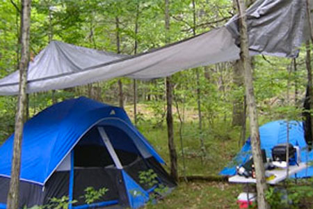
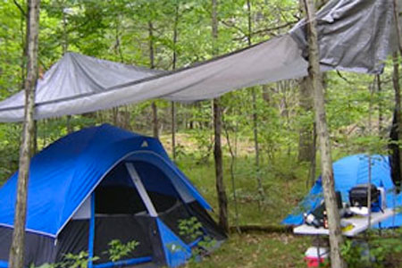
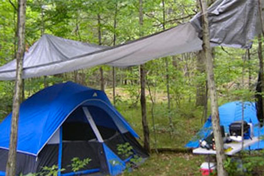

Wilderness travel is a popular pastime. However, there are many hazrds and choices that can deterome the outcome of a trip an explorer may take. This website covers the topics of climate, travel tips as well as health and safety concerns. If you have any questions or comments please contact us via our contact page.
